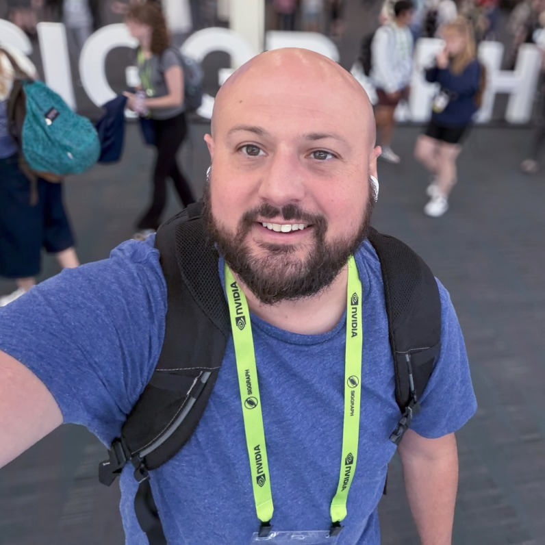

John B. Harrison
Doctoral AI Researcher, Arizona State University.

I am a doctoral student and AI researcher in the Ira A. Fulton Schools of Engineering at Arizona State University, where I work in the Active Perception Group under the guidance of Dr. Yezhou (YZ) Yang.
My research centers on neuro-symbolic multi-agent world models — models that fuse neural dynamics with
symbolic structure to represent both an environment and the agents within it — applied through
model-based RL & MPC to game AI and robotics. I am working toward
open-ended meta-learning: agents that can self-improve online — continuing to learn after deployment
by improving their own models, skills, and curricula — exhibit trustworthy emergent behavior, and are self-explainable,
so that reasoning, planning, and control stay trustworthy, generalizable, and adaptive online.
I believe open-ended intelligence must be self-improving, self-explaining, grounded in explicit models of the world
and of other agents, and trustworthy enough to act in it.
I am also the Founder & CEO and Principal Technical Director (AI, cloud simulation, graphics, and technical art) of Here Be Giants — an ecosystem building epic open-world multi-agent games, open-world exploration, logistics and robotics, serious training and world simulations, and cloud AI for entertainment. I hold an M.S. in Innovation Design and Venture Development from ASU, with a focus on game and world-simulation AI company development.
Before my Ph.D., I spent several years in industry as a data scientist and engineer — designing serverless machine-learning and data pipelines and deep reinforcement learning recommender agents at Realogy, re-architecting predictive-analytics pipelines at Strike Social, building FDA-compliant APIs for a medical predictive-analytics platform at physIQ, and developing enterprise data-visualization dashboards at MOBI — after starting my career as a senior applications programmer at Purdue University, where I also earned my M.S. and B.S. in Computer Science. I think the best innovation finds a balance between creative vision, the inspiration of beauty, meaning and higher purpose, and an understanding of the people it serves.
Affiliations
News
| Jul 2025 | 🚀 Founded Here Be Giants — epic open-world multi-agent games, world simulations, logistics & robotics, and cloud AI for entertainment. |
|---|---|
| 2023 | 🎓 Completed my M.S. in Innovation Design & Venture Development at ASU (GPA 4.0), focused on game and world-simulation AI company development. |
| 2021 | Started my Ph.D. in Computer Science at ASU’s Fulton Schools of Engineering, joining the Active Perception Group. |
| Sep 2019 | Moved into a Data Scientist role at Realogy after a year as Big Data Engineer — deep RL recommender agents and learn-to-rank models for home listings. |
| 2016 | Completed my M.S. in Computer Science at Purdue, focused on machine learning engineering and computer graphics. |
Experience
Founder & CEO · Principal Technical Director (AI, Cloud Simulation, Graphics, Technical Art)
Here Be Giants (Ecosystem)
Epic open-world multi-agent games, open-world exploration, logistics and robotics, serious training and world simulations, and cloud AI for entertainment.
Data Scientist
Realogy Holdings Corp.
- Designed and developed automated, serverless machine-learning and data pipelines for Realogy’s home-listings and leads data at scale.
- Created custom deep reinforcement learning agents for a new platform for building recommender systems in support of real-estate agent workflows.
- Built a deep-learning learn-to-rank model to prioritize the ordering of home images, improving listing quality.
- Engineered data-retrieval layers and related APIs for home-listing search services.
Big Data Engineer
Realogy Holdings Corp.
Data Engineer
Strike Social
- Established architectural principles for the redesign of pipelines and associated frameworks.
- Reworked critical pipelines for the flagship SaaS YouTube media-buying predictive-analytics platform.
- Collaborated with the data-science team to productionize machine-learning models.
Backend Software Engineer
physIQ
- Developed, tested, and documented APIs and associated data-storage solutions for a medical predictive-analytics platform, consistent with FDA-compliant quality requirements.
- Established API architectural principles and selected software design patterns, frameworks, and tools in support of data-engineering and data-science workflows.
UX Developer, Data Visualization
MOBI Wireless Management
- Developed enterprise-grade interactive data visualization and UI components for global reporting dashboards used in large-scale corporate mobile-device management.
- Contributed to the design of intuitive, engaging reporting dashboards, implemented from requirements and UX goals.
Senior Applications Programmer / Analyst
Purdue University, Software Engineering Department, IT Services
- Developed ETL data pipelines and full-stack web and iOS applications supporting university operations, including mission-critical pipelines for Blackboard e-learning and confidential employee and student data.
- Worked cross-functionally with departments such as accounting to build pipelines, applications, and reports for their business needs.
Education
Ph.D., Computer Science
Ira A. Fulton Schools of Engineering, Arizona State University
Neuro-symbolic multi-agent world models · Game AI · MBRL & MPC for open-ended meta-learning — self-improving, self-explainable, trustworthy, generalizable, and online-adaptive reasoning, planning, and control — in the ASU Active Perception Group under the guidance of Dr. YZ Yang.
M.S., Innovation Design and Venture Development
Arizona State University
Focus: game and world-simulation AI company development.
M.S., Computer Science
Purdue University
Focus areas: machine learning engineering, computer graphics.
B.S., Computer Science
Purdue University
Focus area: software engineering.
A.S., Information Systems
Purdue University